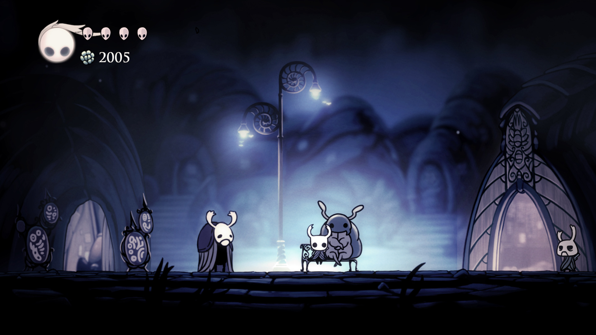

Hollow Knight Wiki Guide: Desça para um mundo vasto e arruinado!
A história de Hollow Knight se passa em um reino subterrâneo fictício de insetos chamado Hallownest, que está à beira da destruição por um ser divino conhecido como The Radiance. O Radiance procura corromper o reino infectando os cidadãos de Hallownest, quebrando suas mentes e abandonando suas vontades, fazendo-os atacar insetos não infectados. Eles agem sem pensar, continuando o estilo de vida diário comum de sua vida anterior, como marchar pela Cidade das Lágrimas como um guarda, e atacarão qualquer ser não infectado que virem. A história de The Hollow Knight começa com o protagonista, The Knight, um estranho Vessel, chegando repentinamente em Dirtmouth depois de ser chamado telepaticamente. Este misterioso cavaleiro sem nome começa sua jornada por Hallownest descobrindo os segredos mais sombrios do reino esquecido e tentando salvar o reino da destruição iminente que o espera.

Explore um vasto mundo interconectado de estradas esquecidas, selvas cobertas de mato e cidades em ruínas.
Forje seu próprio caminho! O mundo de Hallownest é expansivo e aberto. Escolha quais caminhos você segue, quais inimigos você enfrenta e encontre seu próprio caminho a seguir.
Um enorme elenco de personagens fofos e assustadores, todos trazidos à vida com a tradicional animação 2D quadro a quadro.
Mais de 140 inimigos! 30 chefes épicos! Enfrente feras ferozes e derrote antigos cavaleiros em sua missão pelo reino. Rastreie todos os inimigos distorcidos e adicione-os ao seu Diário do Caçador!
Trace sua jornada com extensas ferramentas de mapeamento. Compre bússolas, penas, mapas e alfinetes para aprimorar sua compreensão das muitas paisagens sinuosas de Hollow Knight.
Uma trilha sonora assombrosa e íntima acompanha o jogador em sua jornada, composta por Christopher Larkin. A partitura ecoa a majestade e a tristeza de uma civilização arruinada.
Domine Novos Poderes!
À medida que o Cavaleiro avança no jogo, ele deve se tornar mais poderoso para enfrentar as mutações criadas pelo teste do tempo e continuar em seus deveres como um receptáculo. Novas áreas exploradas e interações com vários NPCs eventualmente produzirão novos feitiços e habilidades poderosos que podem ser usados para derrotar inimigos e chefes poderosos, ou atravessar áreas em Hallownest que não podiam ser acessadas antes.
Explore áreas ocultas com novos feitiços e habilidades
Mestre do Ferrão
Escondidos atrás de chefes ou em locais secretos, há uma variedade de feitiços e habilidades que podem ser usados para desbloquear novas áreas do jogo ou simplesmente criar atalhos entre determinados locais. Cada habilidade que o Cavaleiro adquire marca um novo marco na progressão do jogo. Há uma infinidade de caminhos nos quais você está proibido de entrar a partir do momento em que pisa em Hallownest, e você se perderá nas opções de qual caminho seguir após adquirir um novo feitiço de travessia.
O Ferrão é a arma principal e característica do Cavaleiro, não exigindo nenhuma Alma para usar. Ele pode ser atualizado mais tarde no jogo e também pode ser utilizado para dominar as antigas Nail Arts, que foram dominadas por vários NPCs que você conhece. Você receberá ensinamentos dos Nailmasters para adquirir essas habilidades especiais e utilizá-las contra os inimigos e chefes que você enfrentará mais tarde.
Buffs de Talismãs únicos e poderosos
Montando sua Build
Você receberá até 40 Amuletos ao longo do jogo, cada um beneficiando o Cavaleiro de uma maneira única e diferente. Alguns Feitiços podem simplesmente aumentar o dano/alcance do The Knights Nail ou diminuir o custo da Alma de Feitiços e Habilidades. Outros amuletos podem fornecer a você companheiros para lutar junto, ou dar a você uma barra de saúde exclusiva que possui máscaras extras ou talvez até se regenere com o tempo.
Se você é um jogador de alto risco e alta recompensa, pode se interessar por esta mecânica. Se você equipar um Amuleto que tenha um Custo Notch que exceda seu Limite Notch atual 5 vezes, você pode ficar Sobrecarregado. Nesse estado, você tem todos os buffs dos feitiços que equipou, incluindo aquele que excederia seu limite de entalhe, mas sofre o dobro do dano.
Explore o vasto mapa de Hollownest!
Hallownest em Hollow Knight é o local principal onde o jogo, Hollow Knight, acontece. Hallownest já foi dito ser um reino próspero que estava no centro de um terreno baldio, mas depois caiu em ruínas depois que a infecção se espalhou.
Mapa de Hollownest
O mapa de Hollownest é bem vasto e quase impossível de não se perder. É comum durante a jornada o jogador se sentir perdido e sem rumo, para isso existem alguns recursos que ajudam o jogador, principalmente os itens de localização e o npc Cornifer.
O Cartógrafo Cornifer
Adquira seu mapa
Um dos NPC's mais importantes e amigáveis que você encontrará em sua jornada é Cornifer, um cartógrafo disposto a vender mapas dos locais em Hallownest por uma pequena quantia de Geo. Ele mora em Dirtmouth com sua esposa Iselda e passa seus dias explorando Hallownest e desenhando um enorme mapa do reino em ruínas.
A exploração em Hollow Knight pode ser feita sem esforço comprando um mapa e uma pena, isso permitirá que o cavaleiro mapeie uma área descoberta, como salas, passagens e câmaras escondidas em Hallownest. Primeiro, é necessário um mapa incompleto que pode ser adquirido na Cornifer, onde geralmente Cornifer aparece cada vez que um jogador derrota um Boss da área. E a Pena pode, posteriormente, ser comprada de Iselda - caso você perca a chance de interagir com Cornifer, Iselda também pode vender partes do mapa por um preço mais alto. Depois que os jogadores comprarem os dois itens e descobrirem novas áreas, os jogadores precisam localizar e descansar em um banco para atualizar o mapa.
Guias / Conquistas / Passo a Passo
À medida que o Cavaleiro avança no jogo, ele deve se tornar mais poderoso para enfrentar as mutações criadas pelo teste do tempo e continuar em seus deveres como um receptáculo. Novas áreas exploradas e interações com vários NPCs eventualmente produzirão novos feitiços e habilidades poderosos que podem ser usados para derrotar inimigos e chefes poderosos, ou atravessar áreas em Hallownest que não podiam ser acessadas antes.
Guia de introdução ou Guia do iniciante
Passo a passo
Guia de Introdução ou Guia do Iniciante em Hollow Knight fornece aos jogadores novos e veteranos dicas e truques importantes e vitais para a capacidade de sua sobrevivência assim que você começar sua aventura de descobrir os segredos das profundezas de Hallownest. O Hollow Knight Beginner's Guide abrange várias informações que ajudarão o jogador a entender os fundamentos da mecânica do jogo, bem como as coisas recomendadas a serem feitas antes de iniciar o jogo.
O passo a passo em Hollow Knight fornece ao jogador um passo a passo detalhado da área sobre como abordar as profundezas de Hallownest. Esta página conterá apenas as áreas que um jogador precisa localizar, limpar a área e derrotar certos chefes para progredir na história principal do jogo - elas serão colocadas em sua respectiva ordem de aparição. Você também pode verificar a página de locais para verificar cada área de Hallownest, e também pode visitar nossa página de missões para obter um guia específico sobre como concluir missões de NPC.
Guia de Troféus e Conquistas
Guia de conclusão perfeita
O Guia de Conclusão em Hollow Knight contém uma visão geral para os jogadores atingirem 112% de conclusão no jogo. Isso também permitirá que os jogadores obtenham as seguintes conquistas: Conclusão, Conclusão rápida, Coração de aço e Conclusão pura. Você pode clicar aqui para saber mais sobre as conquistas e troféus que podem ser desbloqueados.
Os jogadores poderão ver sua porcentagem atual de conclusão usando a habilidade World Sense.
Guia de Troféus e Conquistas em Hollow Knight são tarefas e desafios que um jogador adquire após completar e atender a certos critérios no jogo. Esta conterá a lista de conquistas que podem ser desbloqueadas para jogadores de PC, tanto para o jogo base quanto para DLCs, assim como os troféus para jogadores de PS4 e como adquiri-los - para jogadores de Nintendo Switch, conquistas são chamadas de Quests desde o Switch não possui um sistema de conquistas como o Playstation 4, Xbox One e PC.
Venha fazer parte da nossa comunidade!
Registrar-se
Visite nossas redes sociais
Comentários